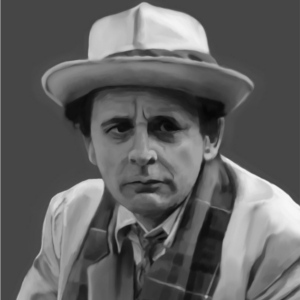

Portrayed by Sylvester McCoy
|  | (Born Percy James Patrick Kent-Smith; 20 August 1943) is a Scottish actor. As a comic act and busker he appeared regularly on stage and on BBC Children's television in the 1970s and 80s, but is best known for playing the seventh incarnation of the Doctor in the long-running science fiction television series Doctor Who from 1987 to 1989 – the final Doctor of the original programme – and a brief return in a television film in 1996. He will be appearing as the wizard Radagast in the upcoming film adaptations of The Hobbit. |